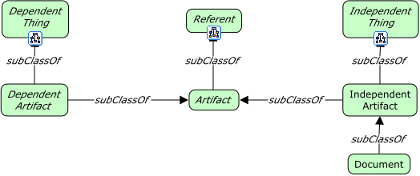
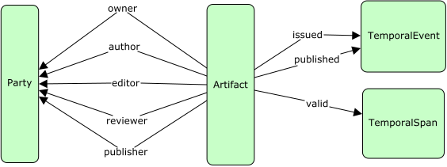

Artifacts

Artifacts
Classes
TBD
Artifact
Definition:
OWL:
fnd:Artifact a owl:Class ;
dfs:subClassOf fnd:Referent ;
skos:prefLabel "Artifact"@en ;
skos:definition ""@en .
Dependent artifact
Definition:
OWL:
fnd:DependentArtifact a owl:Class ;
dfs:subClassOf fnd:DependentThing, fnd:Artifact ;
skos:prefLabel "Dependent artifact"@en ;
skos:definition ""@en .
Definition:
OWL:
Document
Definition:
OWL:
fnd:Document a owl:Class ;
dfs:subClassOf fnd:Artifact ;
skos:prefLabel "Document"@en ;
skos:definition ""@en .
Independent artifact
Definition:
OWL:
fnd:IndependentArtifact a owl:Class ;
dfs:subClassOf fnd:IndependentThing, fnd:Artifact ;
skos:prefLabel "Independent artifact"@en ;
skos:definition ""@en .
Properties

artifact property
Definition:
A property on some thing whose value is an artifact.
OWL:
fnd:artifactProperty a owl:ObjectProperty ;
rdfs:domain fnd:Thing ;
rdfs:range fnd:Artifact ;
skos:prefLabel "artifact property"@en ;
skos:definition "A property on some *thing* whose value is an artifact."@en ;
skos:example "The property `author`, as a sub-property, is a relation from a party to an artifact.".
party property of artifact
Definition:
A property of an artifact whose value is a party.
OWL:
fnd:partyPropertyOfArtifact a owl:ObjectProperty ;
rdfs:subClassOf fnd:propertyOfArtifact ;
rdfs:domain fnd:Artifact ;
rdfs:range fnd:Party ;
skos:prefLabel "A property of an artifact whose value is a party."@en ;
skos:definition ""@en .
property of artifact
Definition:
A property of an artifact, the type of which is unknown.
OWL:
fnd:propertyOfArtifact a owl:ObjectProperty ;
rdfs:domain fnd:Artifact ;
rdfs:range fnd:Thing ;
skos:prefLabel "property of artifact"@en ;
skos:definition "A property of an artifact, the type of which is unknown."@en .
temporal event property of artifact
Definition:
A property of an artifact whose value is a point in time (temporal event).
OWL:
fnd:temporalEventPropertyOfArtifact a owl:ObjectProperty ;
rdfs:subClassOf fnd:propertyOfArtifact ;
rdfs:domain fnd:Artifact ;
rdfs:range fnd:TemporalEvent ;
skos:prefLabel "temporal event property of artifact"@en ;
skos:definition "A property of an artifact whose value is a point in time (temporal event)."@en .
temporal span property of artifact
Definition:
A property of an artifact whose value is a span in time (temporal span).
OWL:
fnd:temporalSpanPropertyOfArtifact a owl:ObjectProperty ;
rdfs:subClassOf fnd:propertyOfArtifact ;
rdfs:domain fnd:Artifact ;
rdfs:range fnd:TemporalSpan ;
skos:prefLabel "temporal span property of artifact"@en ;
skos:definition "A property of an artifact whose value is a span in time (temporal span)."@en ;
skos:example "A sub-class of this property may be `validityDuration` for artifacts that expire.".